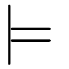

Hi there!
I am Sonat Süer. An ex-mathematician and a neophyte coder. You can reach me via email: sonatsuer at gmail dot com. I am also on twitter.
This is my blog:
Linear combinations of applicatives (September 4, 2022)
Two characterizations of natural numbers (August 11, 2022)
Optics and representable functors (August 6, 2022)
Schröder-Bernstein via Eilenberg-Mazur in Haskell (July 12, 2022)
A note on lenses (July 4, 2021)
Leaking implementation details (for mathematicians) (February 7, 2021)
Monoid homomorphisms (2/2) (August 9, 2018)
Monoid homomorphisms (1/2) (July 30, 2018)
An invitation to functional programming (for mathematicians) (July 23, 2018)
Self aware programs (July 11, 2018)
Kolmogorov complexity (2/2) (June 14, 2018)
Kolmogorov complexity (1/2) (May 21, 2018)
Curry-Howard correspondence from scratch (2/2) (May 14, 2018)
Curry-Howard correspondence from scratch (1/2) (May 5, 2018)